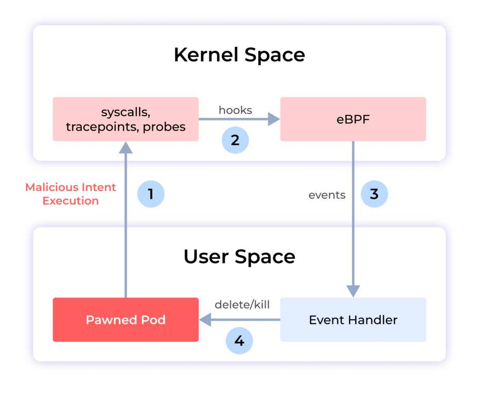
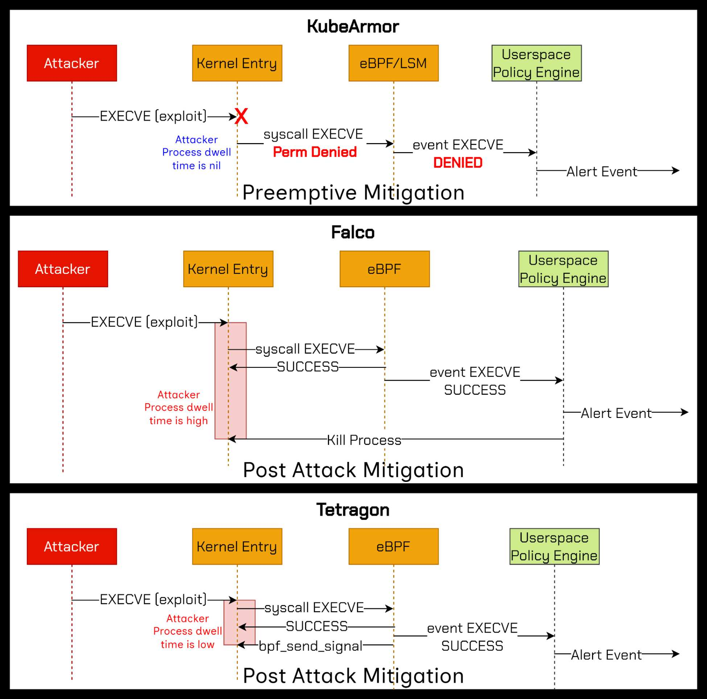
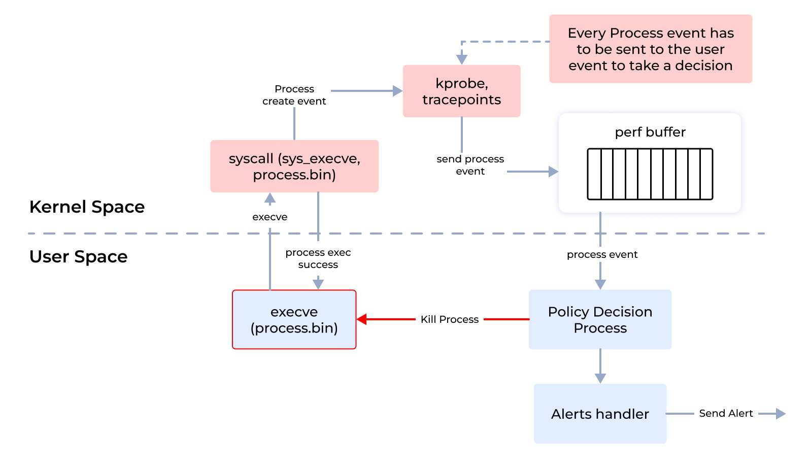
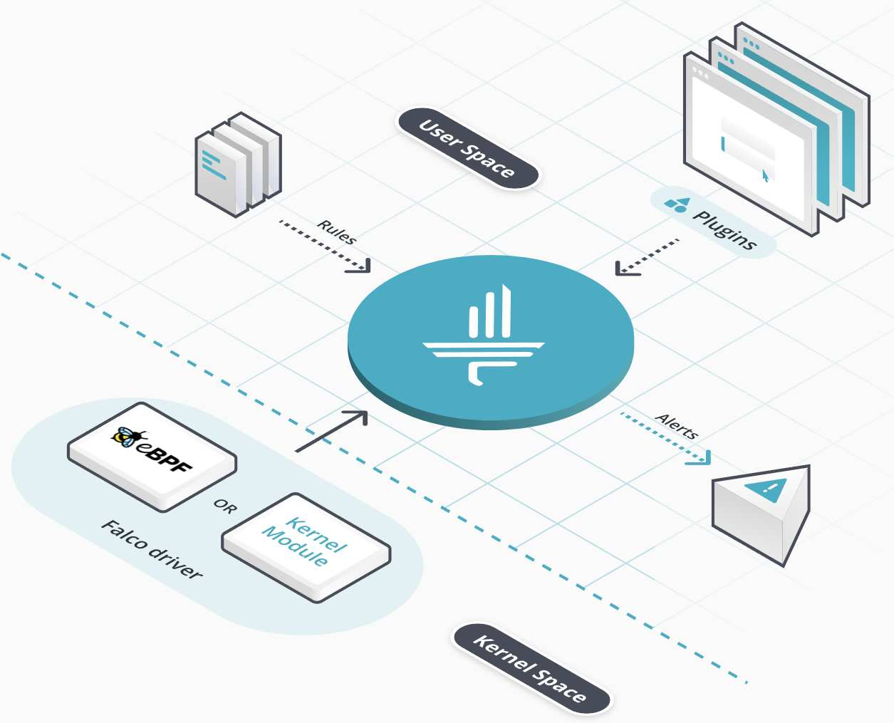
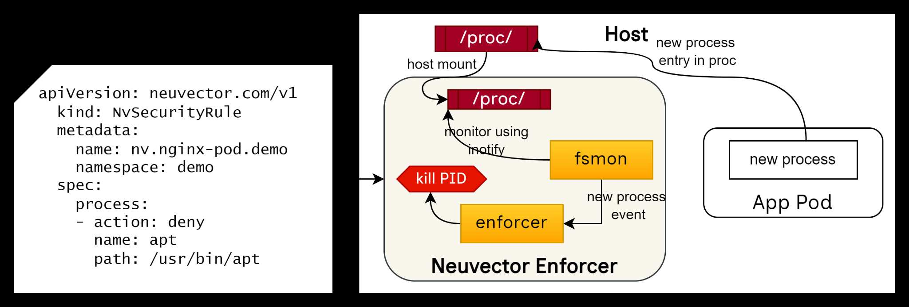
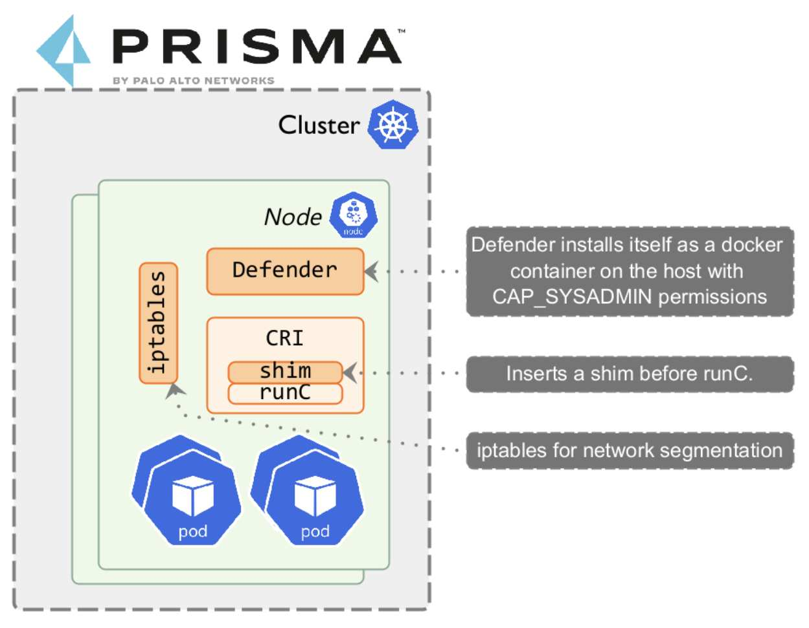
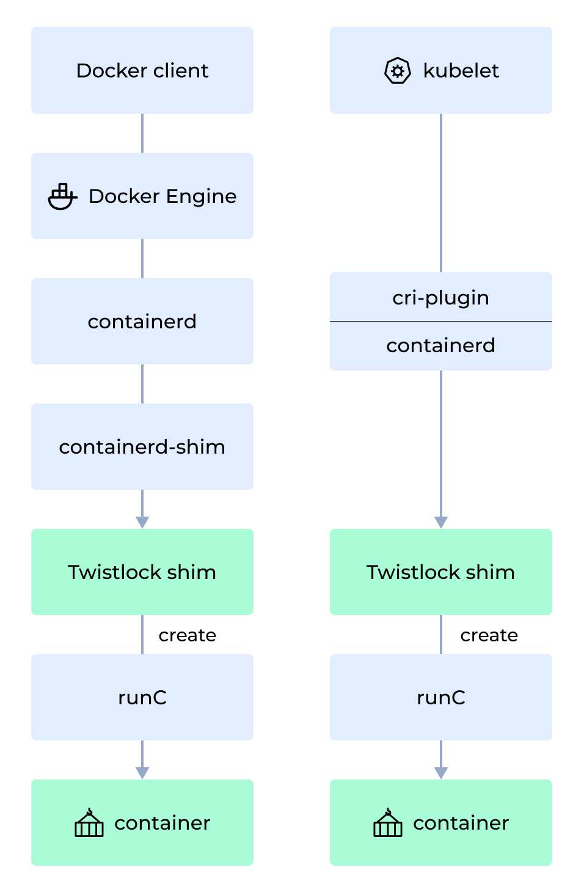
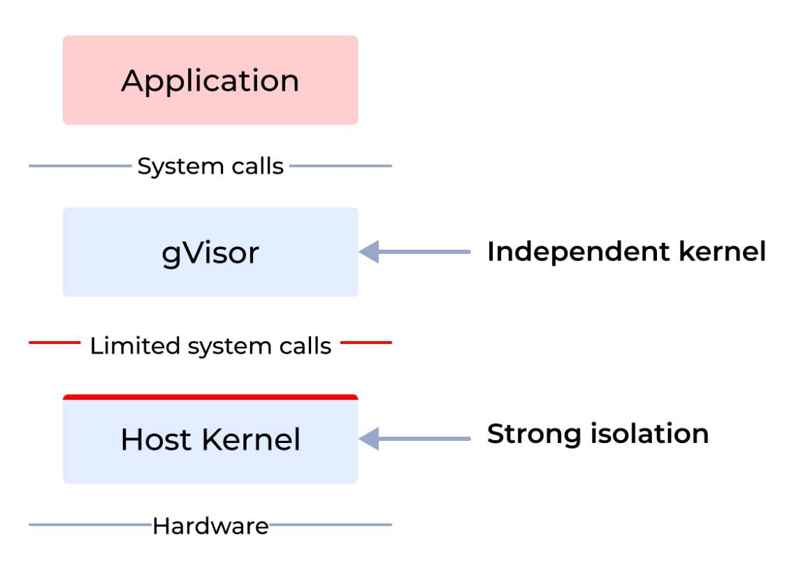
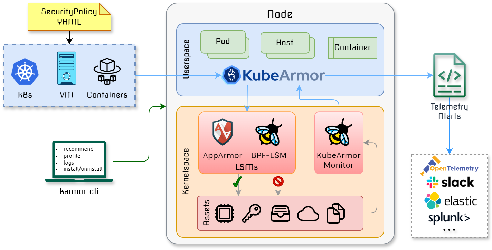

About this paper
This paper is a technical analysis of container runtime security tools. It compares their detection, response, and prevention capabilities, and it explains the kernel primitives each one depends on. It covers the architectures behind those primitives, time-of-check to time-of-use weaknesses, event loss under load, sandboxing, and zero trust policy. It is written for security practitioners who have to choose an engine and live with that choice.
The scope is container runtime security only. Image scanning, admission control, posture management, and network policy are out of scope, except where a runtime engine depends on them.
- Published by
- The KubeArmor project, a Sandbox project of the Cloud Native Computing Foundation.
- Source
- The typeset source for this paper lives in the KubeArmor repository, under whitepapers/container-runtime-security. Corrections are welcome as pull requests.
- Feedback
- Open a thread in GitHub Discussions, or join #kubearmor on CNCF Slack.
- Disclaimer
- The author is one of the maintainers of KubeArmor. The aim of the paper is to examine the specific primitives that different runtime security engines use for enforcement. The research behind it was carried out by the author. If you disagree with any statement here, raise it in Discussions or on Slack, and the paper will be corrected in the open.
Contents
-
1Introduction__P_sec-1__
-
2Characteristics of a runtime security solution__P_sec-2__
- 2.1Detection capabilities__P_sec-2-1__
- 2.2Response capabilities__P_sec-2-2__
- 2.3Prevention capabilities__P_sec-2-3__
- 2.4Sandboxing capabilities__P_sec-2-4__
- 2.5Performance impact__P_sec-2-5__
- 2.6Ease of deployment on hardened distributions__P_sec-2-6__
- 2.7Ease of runtime policy enforcement__P_sec-2-7__
- 2.8Policies adhering to zero trust principles__P_sec-2-8__
-
3Runtime security with detect and respond__P_sec-3__
- 3.1Killing a process is not an effective remediation strategy__P_sec-3-1__
- 3.2The response depends on a chain of actions__P_sec-3-2__
-
4Engine analysis__P_sec-4__
- 4.1Falco__P_sec-4-1__
- 4.2Tetragon__P_sec-4-2__
- 4.3NeuVector__P_sec-4-3__
- 4.4Palo Alto Prisma and TwistLock__P_sec-4-4__
- 4.5gVisor__P_sec-4-5__
- 4.6KubeArmor__P_sec-4-6__
-
5Case study: file integrity monitoring__P_sec-5__
-
6Summary__P_sec-6__
Figures and tables
- Table 1Engines covered here
- Figure 1Detect and respond loop
- Figure 2Attacker dwell time
- Figure 3Event flow to userspace
- Figure 4Falco architecture
- Figure 5NeuVector enforcement
- Figure 6Prisma Defender
- Figure 7TwistLock shim path
- Figure 8gVisor application kernel
- Figure 9KubeArmor architecture
- Table 2Engine capability matrix
1Introduction
This technical guide compares and contrasts the fundamental architectures of the different container runtime security tools, such as Falco, KubeArmor, Tetragon, Tracee, and NeuVector, and looks at the primitives each one uses under the hood. Note that the guide focuses only on container runtime security.
At a broader level, the tools can be categorized into:
- Detection only.
- Detect and respond.
- Preventive engines with inline enforcement. Most inline enforcement tooling also has an observability mode that allows one to trace and log the system events.
| Tool | Type | Remarks |
|---|---|---|
| Falco | Detect and respond | Falco is a detection engine. Sysdig open-sourced Falco Talon, which provides a response engine on top of Falco. There is no inline mitigation capability. |
| Tetragon | Detection and enforcement | Tetragon provides a detection engine based on eBPF. It also provides enforcement
using bpf_send_signal() to kill the process, and
bpf_override_return()
to handle inline mitigation. Override return is mostly turned off in production
environments, and it is neither reliable nor advised. |
| Tracee | Detection only | Open-source Tracee provides detection only. |
| KubeArmor | Detection and inline mitigation | KubeArmor provides a detection engine based on eBPF. It uses LSMs, namely LSM-BPF and AppArmor, for inline mitigation. |
| NeuVector | Detect and respond | The only engine that does not use eBPF. It uses inotify and fanotify. It provides the ability to kill the process from userspace. |
| Palo Alto TwistLock not open source |
Detection and inline enforcement | TwistLock Defender replaces the original runC with a runC shim binary to enforce runtime blocking rules. This causes several issues on hardened distributions such as Bottlerocket and GKE COS. |
2Characteristics of a runtime security solution
2.1Detection capabilities
Most runtime solutions depend on eBPF to get runtime visibility across process executions, file system accesses, and network accesses. The most obvious eBPF hooks to target are kprobes, kretprobes, and tracepoints, which are fairly easy to use. There are a few systems-related challenges, for example getting an absolute path of the file object. Some solutions depend on the use of LSM hooks to get the full path, and these mechanisms are pretty well understood now. The other obvious challenge is that all the expected eBPF hook points or capabilities might not be equally applicable across all Linux distributions and across all platforms such as x86 and ARM.
One more challenge when it comes to detection is the ability to ship all the events. Some operations might cause a burst of system activity, and in a lot of cases it might not be possible to ship all of these raw events to the analysis engine in the cloud. It is relatively simple to overwhelm the event loop that operates on the kernel perf or ring circular buffer, so that events are lost. It is very common to find solutions implementing ways to tell users that eBPF events are lost in the circular perf or ring buffer. However, there is no way to prevent the events themselves from getting lost, as Pitfall #5: Event Overload describes. An attach point can be easily overwhelmed with events, because eBPF lacks concurrency primitives and an eBPF probe cannot block the event producer. The kernel will simply stop calling the kprobes if it finds that it is overwhelmed.
Another issue with kprobes is that they can be easily disarmed if the attacker is allowed to execute code even for a brief period.
2.2Response capabilities
The events from the detection engine are sent to a policy decision process, most likely implemented in userspace, that determines the action or response to be taken. Responses involve:
- Killing a target process.
- Quarantining a node or pod.
- Deleting a pod or node.
In security parlance, this model is called post-attack mitigation, since the attacker is allowed to execute their code in the target environment and a response is taken after that. In most cases the response will take several milliseconds to several minutes to execute, and so it might prove too late to be effective. For example, consider a ransomware attacker who is moving or deleting sensitive assets. Such an action could complete in a few milliseconds, and a response sent after that would not protect those assets.

Time-of-check to time-of-use
Time-of-check to time-of-use (TOCTOU) is a condition that occurs when a system's behavior depends on the timing between checking a condition and using the result. TOCTOU vulnerabilities can be exploited by attackers to gain unauthorized access to resources, modify data, or elevate privileges.
When handling certain system events such as connect(), open(),
openat(), and creat(), the security engine retrieves some of the
arguments by reading userspace buffers on syscall exit. An attacker running a malicious
program on a monitored system could use
a variety of techniques
to deterministically increase the duration of the syscall execution, and modify the arguments
in its own address space after the syscall has been invoked and before its execution is
complete. The security engine will assume that the modified data is the input argument of
the syscall, which may lead to a rule bypass.
Every detect and respond security engine suffers from this problem, including Falco Talon,
Tracee, and NeuVector. Tetragon uses bpf_send_signal() to send a kill signal in
kernel space itself. However, this is also a case of post-attack mitigation, since the
attacker is allowed to execute code even if only for a brief period. The
grsecurity
analysis of Tetragon puts the objection plainly: advanced kernel features such as eBPF
and kprobes are used there not to keep the kernel itself from being exploited, but to stop an
exploit that has already succeeded from using what it gained.

Overwhelming the event queue so that events drop
Detect and respond systems expect that system events are successfully transmitted to the decision engine in userspace to handle responses. However, under high load conditions it might not be feasible to transmit all the events to userspace, because of eBPF perf and ring buffer limitations. The kernel provides a circular ring buffer to propagate events from kernel space to userspace, and under heavy load the events might be overwritten or lost. There is no way to know the criticality of events, so the system might lose critical events. This may result in no response at all. Attackers might overwhelm the system event queue so that their malicious events never make it to userspace, and so no response is sent.
Advantages of the detect and respond model
- Multi-vector detection. A detection system can consider multiple aspects of
detection from different engines and then respond. For example, L7 API telemetry shows the
use of a previously unused log4j endpoint, and within the same time interval a process
invocation from the
/tmp/folder can be considered a critical security event. The response could be to quarantine the corresponding pod. - Multi-dimensional response. A malicious system process invocation detected by a runtime security engine can trigger a response that deactivates external network access by changing the AWS VPC security group, and kills the malicious process.
Disadvantages of the detect and respond model
- Post-attack mitigation. The response is sent once the attacker's code has executed in the target environment. An attacker can stop the events from being triggered, either by changing the security knobs or by overwhelming the event loop, and then a response will never be initiated.
- Unable to protect certain actions. Consider a Kubernetes pod that has a volume mount containing sensitive assets. An attacker would delete the asset, and the response would not be able to prevent it, because by the time the response is handled the operation has completed.
- Bigger impact on services. The response might result in a service outage, depending on the response action. For example, quarantining the node or pod might cause an outage, depending on how the application on that node or pod handles resource unavailability.
2.3Prevention capabilities
Prevention, or inline enforcement, requires that a system action such as a process exec, file access, or network access is vetted or rejected before the action is executed. Linux primitives such as seccomp and LSMs (Linux Security Modules such as AppArmor and SELinux) provide a systematic way to run such a vetting process and deny the execution or the access to the resource.
There are userspace techniques such as LD_PRELOAD that can also achieve
prevention capabilities. However, there are security issues surrounding userspace techniques,
and they can be circumvented even by a script kiddie attacker.
eBPF and its role in preventive capabilities
It is usually assumed that eBPF provides enforcement capabilities as well. However, this is not true in all cases. The enforcement capabilities of eBPF depend on the hook points used. For example, in the case of network packet handling, one can use traffic control (TC) hook points or XDP (express data path) hook points, where one can redirect or drop a packet and so handle network packet enforcement rules.
However, the same is not true for kprobes, kretprobes, and tracepoints. These hook points are primarily for observability, and one cannot use them to change system call behavior without major implications.
Note that bpf_override_return() is often quoted as a BPF helper primitive
available for enforcing controls at the kprobes hook point. This helper works by setting the
program counter to an override function, which is run in place of the original probed
function. This means the probed function is not run at all. The replacement function just
returns with the required value.
Tetragon
quotes this as the primitive it uses. However,
bpf_override_return() should not be used for security controls, as per the
BPF helper man page
itself, since it has security implications. bpf_override_return() is typically
used for error injection and
depends on
another kernel configuration called CONFIG_FUNCTION_ERROR_INJECTION.
Moreover, the system call needs to be explicitly listed as error-injectable on the target
distribution for it to work. Given all this, using bpf_override_return() is not
worth pursuing in production environments.
Based
on the author's survey, a small minority of production systems have this enabled. Most of
those distributions are used on desktops. The distributions used in Kubernetes and server
deployments do not keep these enabled.
Prevention capabilities and zero trust
Zero trust expects that policies can be specified in the least permissive mode. For example, the user should be able to specify what execution is allowed, and everything else should be denied or audited.
The core constraint
A detect and respond system cannot truly provide a zero trust system, because it does not have preventive capabilities.
2.4Sandboxing capabilities
Sandboxing
applications during their runtime execution is a practice often followed so that unbounded
access is not given to untrusted applications. Unbounded access here means access to the file
system, process invocation, network communication, and the use of advanced capabilities. For
example, assume there is an Nginx web server running in a Kubernetes deployment. Typically
Nginx is the only process that would execute within that pod, and it needs access to
sensitive assets such as configuration files in /etc/nginx. Only Nginx and its
worker or child processes can perform network communication. A sandboxing rule would make
sure that:
- Only the Nginx process is allowed to be spawned within that pod.
- Only the Nginx process is allowed access to sensitive file system paths such as
/etc/nginx, which contains critical configuration files. - Only the Nginx process is allowed to do network communication.
- No process is allowed to use advanced capabilities such as
CAP_SYS_ADMIN.
Sandboxing allows deployments to be put in the least permissive mode, which makes them
resilient to zero-day attacks and to remote command injection and execution. Other use cases
for sandboxing require constraining unrestrained access to process execution. For example,
LLM frameworks such as vLLM use external
plugins, through the
trust_remote_code flag,
to achieve certain objectives. The ability to trust arbitrary code is a serious security
concern, and so sandboxing such a framework is highly desirable.
Sandboxing techniques
Sandboxing cannot be achieved using a detect and respond model, because in that model the untrusted code is allowed to execute and a response action is taken later. Sandboxing requires inline mitigation. If an untrustworthy access or execution is attempted, it has to be stopped, blocked, or denied inline.
Gating all the actions. Sandboxing requires that all system actions are gated, that is, they pass through certain checks, and if the checks fail the action is denied. Google gVisor and KubeArmor provide sandboxing capabilities.
2.5Performance impact
Every runtime security engine emits system event telemetry and logs. This can critically affect the user application running on the same cluster or nodes. So it is important to keep the runtime performance of the security engine under control.
An architectural issue with detect and respond systems is that they have to emit all the system events to the policy decision process in the cloud or on the node, and so they cause a heavy performance impact. Every kernel event shipped to userspace affects performance, because a context switch is required to move the event across the kernel to userspace boundary, and after that there are userspace functions that add further overhead.

In contrast, a runtime security system that supports profiling and allow-listing of known system behavior, and that handles preventive security in the kernel itself, can reduce the overhead significantly. Only unknown or non-allow-listed events are sent to the cloud, which reduces the performance overhead significantly.
Another approach to reducing the performance impact is in-kernel aggregation of events before sending them to userspace, which reduces kernel context switches. Any aggregation has an impact on the fidelity of the data samples, and so it should be done carefully.
2.6Ease of deployment on hardened distributions
Enforcing blocking rules requires special primitives. Such primitives might require certain changes at the host or at the container runtime interface layer. For example, Palo Alto TwistLock allows block-based policies by overriding the system default container runC binary with its own runC shim binary. Most hardened distributions, such as Talos Linux, Bottlerocket, and GKE COS, will not allow this.
Runtime security engines that allow inline or preventive mitigation should be deployable
using standard Kubernetes constructs such as Helm, kubectl apply, or a Kubernetes
operator, without changing anything at the host or node level.
2.7Ease of runtime policy enforcement
Representing policies as native Kubernetes resources allows one to enable or disable rules at will, and to manage their lifecycle just as with any other Kubernetes resource. It is important that when a rule is enabled or disabled, it should not require the containers or pods to be restarted.
2.8Policies adhering to zero trust principles
The user should be allowed to specify a policy that allows a specific action and denies or audits everything else.
3Runtime security with detect and respond
The primary model with such systems is that all system events are shipped to a userspace policy decision process (PDP) or event handler, as shown in Figure 1. The user-specified policies and rules are matched, and optionally a response is sent that can:
- Kill the target process.
- Quarantine the target pod or node.
- Delete the target pod or node.
- Change the cloud provider VPC security group setting.
3.1Killing a process is not an effective remediation strategy
Handling a remedial action takes from a few seconds to a few minutes. The fundamental notion of a detect and respond system is to analyze execution events and then kill the malicious process. However, once the malicious code is allowed to execute in the target environment, the attacker will most likely turn off the security knobs, or overwhelm the event engine so that it reaches the event threshold and starts dropping events. Consider another scenario, where a ransomware attacker is moving or deleting sensitive files. This typically takes a few milliseconds. A detect and respond model will never be able to thwart such attacks, because by the time the response action is taken the damage is already done.
3.2The response depends on a chain of actions
The chain of action runs as follows:
- Event detection in the kernel.
- Send the event to userspace.
- Send the event to the policy decision process, in the cloud or on the node.
- The PDP sends a response action.
- The response is shipped to the target node.
The attacker can impede or prevent a response from being sent by compromising multiple links in this chain.
4Engine analysis
4.1Falco
Falco is a CNCF graduated runtime security tool designed to detect and alert on abnormal behavior and potential security threats in real time. Falco is a detection engine, and Falco Talon provides response mechanisms on top of Falco and other events. Falco provides flexible ways to specify rules by which the system events are filtered.

Policy enforcement
Falco does not provide any preventive or inline policy enforcement. For example, one can add rules to detect if particular processes have been executed, but one cannot add rules to deny the execution of those processes. Falco Talon provides an asynchronous response engine that operates on top of Falco, and qualifies as a detect and respond system.
4.2Tetragon
Tetragon provides real-time, eBPF-based security observability and runtime enforcement. One of the primary differences compared to Falco, when it comes to filtering the system events, is that most of the filtering happens in the kernel, which saves costly kernel to userspace context switches.
Tetragon can hook into any function in the Linux kernel and filter on its arguments, return value, and the associated metadata that Tetragon collects about processes such as executable names, files, and other properties. By writing tracing policies, users can solve various security and observability use cases.
Policy enforcement mechanics
Unlike Falco, Tetragon provides a policy enforcement mechanism as well, where users can specify enforcement policy actions such as:
- Send signal. The signal action, such as SIGKILL, sends a specified signal to the current process.
- Override.
The override action modifies the return value of the call. While SIGKILL terminates the
entire process responsible for making the call, override runs in place of the original
kprobed function and returns the value specified in the
argErrorfield.
While Tetragon allows local in-kernel policy enforcement, its policy enforcement mechanics suffer from certain problems.
- Send signal. Tetragon uses the
bpf_send_signal()helper function to send a kill signal to the current process. While the signal is sent from kernel space itself, it still qualifies as a post-attack mitigation primitive, because the malicious process is still allowed to execute. This article from grsecurity explains the risks associated with post-attack mitigation in general, and with Tetragon in particular. - Override return. Tetragon uses the
bpf_override_return()helper function to return an arbitrary user-specified value to the calling system call. Typically this policy action will not work on most production systems, because:- It depends on multiple kernel configurations that are typically not enabled on production systems.
- The target system call has to be tagged under the
ALLOW_ERROR_INJECTIONlist for the helper function to work. - The
bpf_override_return()man page states that the helper has security implications, and so is subject to restrictions.
4.3NeuVector
NeuVector provides process, file, and network-based container security rules. NeuVector also allows local remediation action to be taken. For example, users can specify deny actions for specific processes.
Policy enforcement mechanics
Note that there is no online documentation that explains the internal architecture of NeuVector container runtime security. However, the code was open sourced after its acquisition by SUSE, and the following is based on an analysis of the code repository itself.

Based on the diagram above:
- NeuVector mounts the host procfs within the container itself and monitors it using fsmon and inotify.
- Any execution of a new process event can now be tracked, since it would result in a new folder created in the procfs with the corresponding PID.
- The NeuVector enforcer then sends the kill signal to the corresponding PID if the process is blocklisted.
So NeuVector also deploys post-attack mitigation techniques, such as killing the process, from an enforcement perspective.
Notably, NeuVector does not employ eBPF-based techniques for detection purposes, and so the overall performance impact would be significantly high, since it would be difficult for any userspace-based technique to scale for such runtime security needs.
4.4Palo Alto Prisma and TwistLock
Prisma Cloud provides container runtime security as one of its features, and uses its defender architecture to fulfill it. Notably, Prisma Defender also does not use an eBPF-based architecture. Instead it relies on container runtime-based integration.

Prisma Defender is responsible for enforcing vulnerability and compliance blocking rules. When a blocking rule is created, Defender moves the original runC binary to a new path and inserts a Prisma Cloud runC shim binary in its place.

Policy enforcement mechanics
Prisma replaces the system runC with its own runC binary to apply block-based rules. The Prisma runC then becomes the topmost parent process for all container-based execution, and so it can control the execution. When enforcing block-based enforcement rules, there are multiple issues:
- It is difficult to operate on a hardened distribution such as Bottlerocket, Talos, or COS, since these will not allow insertion of a runC shim. Manual host-specific changes have to be made.
- Applying block-based rules requires node restarts.
- The performance impact is significantly higher, since all the decisions are handled in userspace.
4.5gVisor
gVisor provides a strong layer of isolation between
running applications and the host operating system. It is an application kernel that
implements a Linux-like interface. gVisor includes an Open Container Initiative (OCI) runtime
called runsc that enables it to work with existing container tooling. The
runsc runtime integrates with Docker and Kubernetes, which makes it simple to run
sandboxed containers.

gVisor intercepts application system calls and acts as the guest kernel, without the need for translation through virtualized hardware. gVisor may be thought of either as a merged guest kernel and VMM, or as seccomp on steroids. This architecture allows it to provide a flexible resource footprint, based on threads and memory mappings rather than fixed guest physical resources, while also lowering the fixed costs of virtualization. However, this comes at the price of reduced application compatibility and higher per-system call overhead.
Policy enforcement mechanics
Compared to any other security engine, gVisor takes a very different approach. It introduces an intermediate system call layer through which all the calls are made, and the policy logic is implemented at this intermediate layer. gVisor provides a clean sandboxing environment, and extremely powerful and flexible policy enforcement options compared to any other policy engine. However, there are other issues:
- Intrusive deployment process. Replacing runC is difficult, especially on hardened distributions such as Bottlerocket, Talos, and COS.
- Performance impact. Every call has to be directed through the sentry wall introduced by gVisor.
4.6KubeArmor
KubeArmor is a cloud-native runtime security enforcement system that restricts the behavior of pods, containers, and nodes (VMs) at the system level. That behavior includes process execution, file access, and networking operations.
KubeArmor uses Linux security modules (LSMs) such as AppArmor, SELinux, or BPF-LSM to enforce the user-specified policies. KubeArmor generates rich alerts and telemetry events with container, pod, and namespace identities by using eBPF.

Policy enforcement mechanics
KubeArmor uses eBPF for detection and audit rules. For block-based rules, it uses, in order of priority:
- LSM-BPF.
- AppArmor.
- SELinux, only for host-based rules.
KubeArmor is the first engine to use LSM-BPF to enforce block-based rules consistently for process, file, and network. LSM-BPF provides an extremely flexible way to convert user-specified rules, managed by Kubernetes native resources, into eBPF bytecode that is then injected at LSM hooks. LSM hooks make sure that the enforcement does not suffer from post-attack mitigation, TOCTOU, or semantic poisoning issues. Since all the decision-making, including enforcement, happens in kernel space, the impact on performance is limited.
KubeArmor cannot be operated in environments that do not support LSM-BPF or AppArmor. However, there are no distributions where either of them is unavailable.
5Case study: file integrity monitoring
File integrity monitoring and protection is a good test of the difference between detection, response, and prevention, because the destructive operation is fast and the window for a response is small.
FIM using Falco
Falco provides open-source file integrity monitoring rules based on eBPF. However, it does not support enforcement of block rules. For example, there is no way to deny changes in system folders using these rules. Using Talon, one can add response actions in post-attack mitigation style, if changes are detected in the system folders.
FIM using Tetragon
Tetragon provides both file integrity monitoring and
enforcement
and protection. In enforcement mode it sends a kill signal to any process trying to make
changes to the system folders. However, we did not find any rule to prevent deletion or
unlinking of assets from the same system folders. So we added a security rule using the
kprobe security_path_unlink to prevent the unlinks. Even then, Tetragon could not
prevent the deletion of the assets, because of post-attack mitigation. The target process was
killed after the assets were deleted. The detailed note, with the changes and the observed
behavior, is
captured
here.
FIM using KubeArmor
KubeArmor uses LSMs, specifically LSM-BPF, to prevent changes to sensitive folders. The sample policy can be found here. KubeArmor does not suffer from TOCTOU issues or from any post-attack mitigation issues.
6Summary
There are three categories of runtime security engine:
- Engines that provide detection capabilities and handle threat analysis in the cloud or control plane, providing remediation and response capabilities. Falco Talon with Sysdig, Tracee, Orca, and Wiz fall in this group.
- Engines that provide detection capabilities and localized response capabilities. NeuVector and Tetragon fall in this group.
- Engines that provide detection capabilities, response capabilities from the cloud or control plane, and inline mitigation capabilities. KubeArmor and the security profiles operator fall in this group.
| Engine → Feature ↓ |
Falco + Talon |
Tracee | Tetragon | KubeArmor | NeuVector | gVisor | Prisma enterprise only |
|---|---|---|---|---|---|---|---|
| Detect and respond | Yes | No (ent) | No | No (ent) | No (ent) | No | Yes |
| Preventive capabilities | No | No | Limited | Yes | No | Yes | Yes |
| Performance impact | High | High | Low | Low | High | High | High |
| Zero trust policy | No | No | Yes | Yes | Yes | Yes | Yes |
| Sandboxing | No | No | No | Yes | No | Yes | Yes |
| Deployment complexity | Low | Low | Low | Low | Low | High runC change |
High runC change |
| Implementation language | C++ | Go | Go | Go | Go | Go | Not known |
Containerized environments are becoming the backbone of modern application deployment, and they bring both agility and security challenges. This guide compares the top runtime container security tools, and sets out their capabilities, their key architectural tenets, and the trade-offs those tenets create. By aligning the right tools with your security strategy and operational needs, you can strengthen your containerized workloads against evolving threats. Effective runtime security is a process of continuous improvement, not a one-time solution.